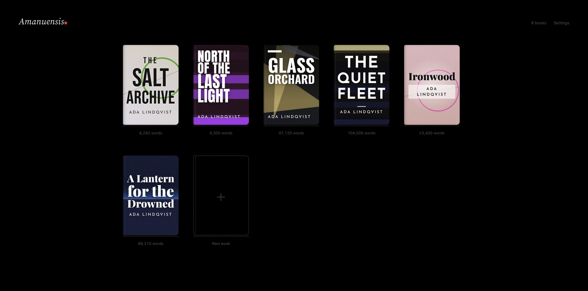
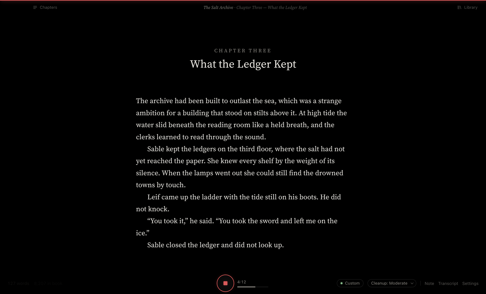
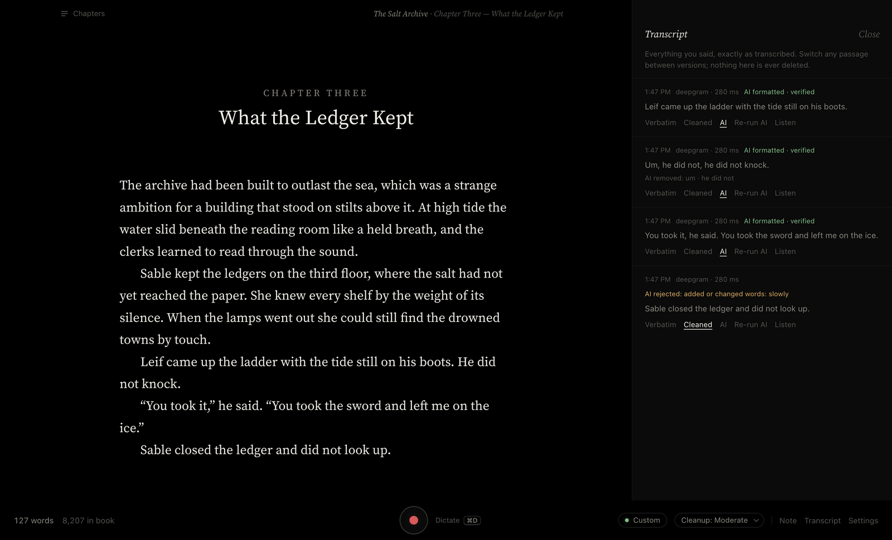
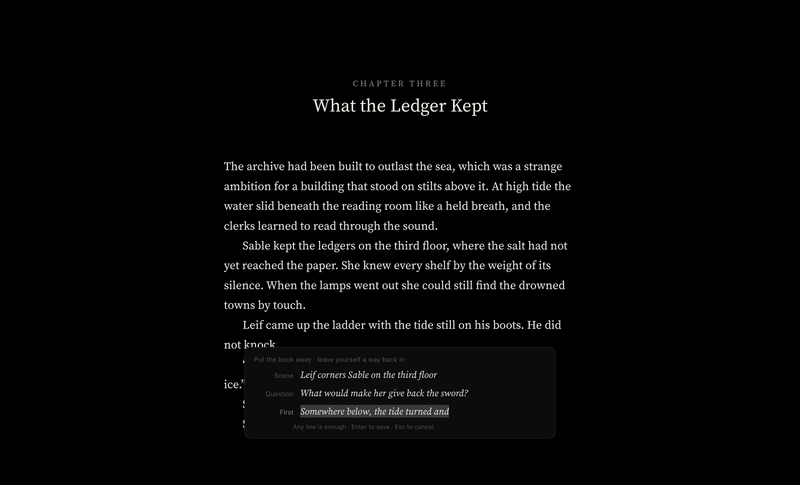
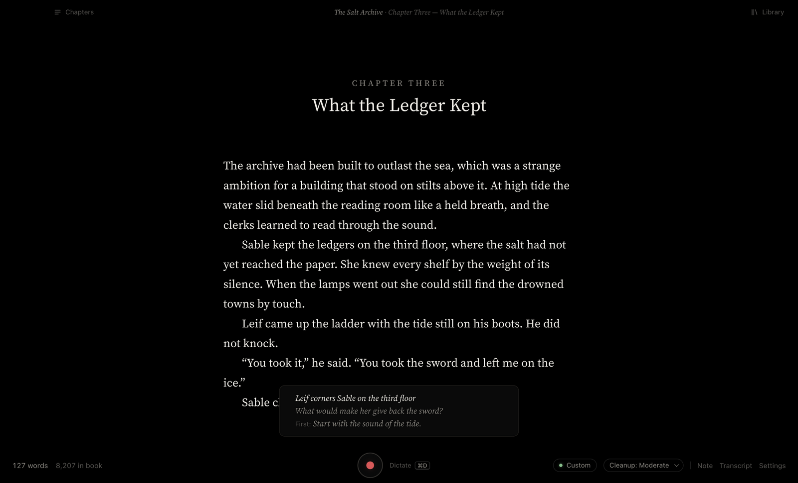
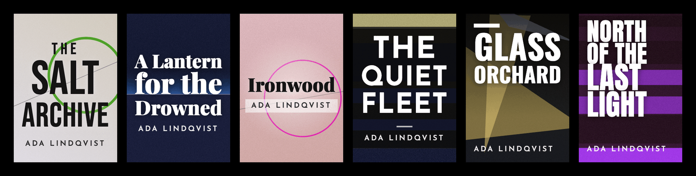

Your books, as covers
Every book gets a cover generated from its title. If you don't like one, ask for another. When a book needs a placeholder, export its cover at 3120 × 4500.

Amanuensis is a writing app for novelists who think out loud. Press record, talk, and your sentences arrive on a black page as finished manuscript prose, with paragraphs, quotation marks and punctuation in place.
Free and open source · Apple Silicon · Version 0.2.0

Speech is messy. You say “um”, you restart a sentence, you repeat yourself. Amanuensis cleans that up as much or as little as you like. Every change is checked word by word against what you actually said, and anything that adds, swaps or reorders a word is thrown out.
“Um, he did not, he did not knock. You know, he just stood there.”
He slowly did not knock.
He did not knock.
Rejected: it added “slowly”. You never said it, so it never reaches your page. The verified version is used instead, and the original transcript is kept either way.
Every book gets a cover generated from its title. If you don't like one, ask for another. When a book needs a placeholder, export its cover at 3120 × 4500.

The transcript drawer holds exactly what you said, passage by passage. Switch any passage between verbatim, cleaned and AI-formatted versions, or listen to the original audio. Nothing is ever deleted.

When you stop for the day, ⇧⌘J saves everything and asks for three optional lines: the scene you want to write, a question you want answered, and the first thing you'll say. Tomorrow they're waiting above the Record button.


Word counts and timers fade while you talk. The page, your voice and a stop button are all that stay. Move to the bar when you want the numbers back. Sprints, goals and progress are there if you want them and off if you don't.

Amanuensis ships with no API keys and no server. You choose who transcribes your voice, you pay them directly, and your books stay as plain files on your Mac.